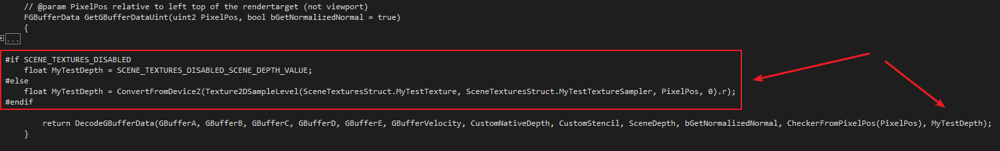

基础概念
- UPrimitiveComponent: 可用于渲染或者物理交互的基类,游戏线程拥有其所有变量和状态
- FPrimitiveSceneProxy:
UPrimitiveComponent的渲染线程版本 - FPrimitiveSceneInfo:
UPrimitiveComponent在渲染器的内部状态,与FPrimitiveSceneProxy一一映射FMeshDrawCommand
保存了在一个特定Pass下绘制一个Mesh所需要知道的所有信息

- ShaderBindings: 记录了
Shader各个阶段绑定的参数集 - VertexStreams: 记录了
VertexBuffer相关信息 - IndexBuffer: 记录了
IndexBuffer相关信息 - CachedPipelineId: 用于索引GraphicsPipelineState
FMeshBatch
FPrimitiveSceneProxy生成FMeshBatch有两个途径
- Cache
- Dynamic
具体由哪个途径生成FMeshBatch通过FPrimitiveSceneProxy::GetViewRelevance决定
StaticMesh来说就是Cache的方式,在Proxy添加到场景时调用DrawStaticElements
生成的FMeshBatch被保存在FPrimitiveSceneInfo的StaticMeshes中
每帧进行重用直到Proxy从场景中移除
Dynamic的方式将会每帧重建FMeshBatch,适用于粒子这种
通过调用GetDynamicElements来生成
MeshProcessor
- Select Shader
- Collect Pass Bindings, vertex Factory bindings, material bindings
- Builds One Or More FMeshDrawCommands From a FMeshBatch

- AddMeshBatch: 必须重载,根据
FMeshBatch生成FMeshDrawCommand
每个Pass都需要实现一个MeshPassProcessor,以DepthRendering为例:
通过调用BuildMeshDrawCommands生成MeshDrawCommand
MeshDrawCommand如何产生?
DynamicMesh的MeshDrawCommand需要每帧产生
目前只有FLocalVertexFactoy,即(UStaticComponent)可以被Cached
因为其它的VertexFactory需要依赖View来设置Shader Binding
- Static Relevance
FBatchingSPDI::DrawMesh如下:
可见对于StaticMesh而言,MeshBatch可以提前CacheMeshDrawCommand需要根据SupportsCachingMeshDrawCommands确定是否能Cache
SupportsCachingMeshDrawCommands如下:
目前只有FLocalVertexFactory支持Cache MeshDrawCommand
如果VertexFactory依赖于View,由于View会变,则Shader Bindings需要每帧更新,因此无法Cache MeshDrawCommand
Shader Bindings:
- Pass-Constant uniform buffer, 如
ViewUniformBuffer,DepthPassUniformBuffer - Vertex Factory Bindings
- Materail Bindings
- Primitive Bindings
- Pass specific bindings which change between draws
目前已知DynamicMesh需要每帧生成MeshDrawCommandStaticMesh根据StaticMeshBatchRelevance决定是否需要重新生成
先看下Cache MeshDrawCommand的过程:
CacheMeshDrawCommands的实现如下:
会按PassType存储在Scene::CacheDrawLists[PassType]中
接下来看下如何收集MeshDrawCommand
MeshDrawCommand的收集就在ComputeViewVisibility中完成
- Static MeshDrawCommand的收集如下:
AddCommandsForMesh中会根据bSupportsCachingMeshDrawCommands来决定是否已经Cache好了
需要生成MeshDrawCommand的StaticMeshBatch记录在DynamicBuildRequests中
- Dynamic MeshDrawCommand收集
DynamicMesh的MeshBatch需要每帧收集:
然后通过SetupMeshPass将StaticMeshBatch和DynamicMeshBatch转换为MeshDrawCommand
因此生成MeshDrawCommand的大致流程如下:1
2
3
4
5
6
7
8
9
10
11
12
13void ComputeViewVisibility(...)
{
...
GatherStaticMeshDrawCommandAndUnCachedMeshBatch(...);
GatherDynamicMeshBatch(...);
for(int viewIndex = 0; viewIndex < Views.Num(); ViewIndex++)
{
SetupMeshPass(Views[viewIndex], ...)
}
}
最终这些MeshDrawCommand被存储于FViewInfo::ParallelMeshDrawCommandPasses[PassType]中
MeshDrawCommand如何使用
最终通过调用以下语句触发DrawCall1
View.ParallelMeshDrawCommandPasses[MeshPassType].DispatchDraw(nullptr, RHICmdList);
custom mesh pass
以复制一个简化版的DepthPass为例
添加Pass枚举
打开文件MeshPassProcessor.h,修改EMeshPass结构体,如下:
修改GetMeshPassName,如下:
新建文件
新增MyTestPassRendering.h,MyTestPassRendering.cpp
存至Engine/Source/Runtime/Renderer/Private目录
添加Shader
新建文件MyTestVertexShader.usf,存于Engine\Shaders\Private目录
(照抄的PositionOnlyDepthVertexShader.usf)
修改MyTestPassRendering.h
新增类FMyTestVS,如下:
在MyTestPassRendering.cpp中通过IMPLEMENT_MATERIAL_SHADER_TYPE实现材质shaderIMPLEMENT_SHADERPIPELINE_TYPE_VS就是构建一个只有VS的FShaderPipelineType对象
添加MeshPassProcessor
AddMeshBatch是必须要重载的函数
然后需要把这个类型的MeshPassProcessor通过以下方式注册到FPassProcessorManager中
这里是把一个函数指针通过FRegisterPassProcessorCreateFunction的构造函数,记录到FPassProcessorManager中
SetupMyTestPassState负责设置渲染状态,这里实现如下:
构造函数实现如下:
构造函数中调用了三个SetUniformBuffer
- SetViewUniformBuffer: ViewUniformBuffer中包含各种变换矩阵以及计算用的贴图数据等等
- SetInstancedViewUniformBuffer: 和ViewUniformBuffer差不多,用于
Instance Stereo - SetPassUniformBuffer: 包含SceneTexture,如GBuffer,SceneDepthTexture等,便于
MaterialGraph和GlobalShader使用
这里我们自己定义一个MyTestPassUniformBuffer:
初始化MyTestPassUniformBuffer:
接下来看AddMeshBatch:
做了个Pass Filter
这个实现里也没啥东西…调用了Process函数,直接看Process
这个函数就是先做了下Shader Filter,然后生成MeshDrawCommand
调用BuildMeshDrawCommands时,传入了一个参数PassDrawRenderState
在构造函数中对PassDrawRenderState设置了三个UniformBuffer
因此生成的MeshDrawCommand都是绑定了这三个UniformBuffer的
GetMyTestPassShaders实现Shader Filter:
收集MeshDrawCommand
之前讲过了MeshDrawCommand的三个来源,那么生成了MeshDrawCommand之后,还需要确定哪些需要被这个Pass调用
打开SceneVisibility.cpp,修改MarkRelevant():
这步是收集Cache过的MeshDrawCommand
修改SceneVisibility.cpp中的ComputeDynamicMeshRelevance:
这步是收集Dynamic的MeshDrawCommand
创建RenderTarget
打开SceneRenderTargets.h,添加成员MyTestSceneDepthZ:
然后创建RT,修改AllocateDeferredShadingPathRenderTargets
释放时机,修改ReleaseSceneColor,ReleaseAllTargets
以及复制构造函数:
打开SceneRenderTargets.h,在FSceneRenderTargets中添加两个函数:
- BeginRenderingMyTestPass
- FinishRenderingMyTestPass
上面定义了一个临时变量FRHIRenderPassInfo RPInfo,这个类型可以设置ColorRT,DepthRT
然后通过RHICmdList.BeginRenderPass(RPInfo, TEXT("PassName"))来绑定RT
渲染
在FDeferredShadingSceneRenderer中增加函数RenderMyTestPass,并在MyTestPassRendering.cpp中实现
SetupMyTestPassView如下:
然后找个地方调用一下,比如放在RenderPrePass之后
到这一步只能靠renderdoc这种剖析工具查看渲染
Buffer Visualization
修改DeferredShadingCommon.ush的FGbufferData
修改DeferredShadingCommon.ush的DecodeGBufferData
这样就把自定义的值放到FGBufferData里了
修改SceneRenderTargetParameters.h
该结构定义了一个变量SceneTexturesStruct,可见SceneRenderTargets.cpp
修改SceneRenderTargets的SetupSceneTetureUniformParameters
在RenderMyTestPass中我们会调用SetupSceneTetureUniformParameters
将MyTestSceneDepthZ绑定到SceneTexturesStruct.MyTestTexture上
因此,在Shader代码中可通过SceneTexturesStruct.MyTestTexture访问
修改DeferredShadingCommon.ush的GetGBufferDataUint

修改DeferredShadingCommon.ush的GetGBufferData
修改SceneViewFamilyBlackboard.h
修改SceneViewFamilyBlackboard.cpp
修改SceneViewFamilyBlackboard.ush
修改BaseEngine.ini
修改`MaterialExpressionSceneTexture.h
接下来新建一个材质,名为MyTestDepth,放在Engine/Content/BufferVisualization目录下:
效果如下: